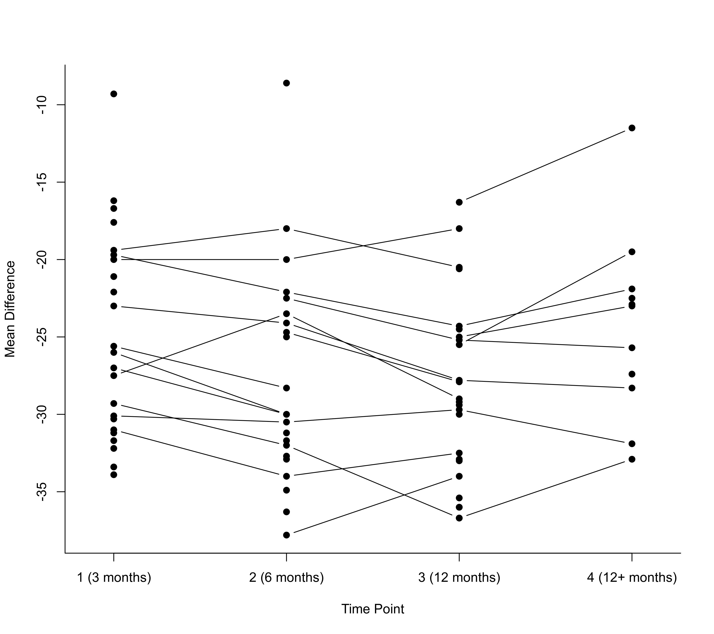

dat.ishak2007.RdResults from 46 studies examining the effects of deep-brain stimulation on motor skills of patients with Parkinson's disease.
dat.ishak2007The data frame contains the following columns:
| study | character | (first) author and year |
| y1i | numeric | observed mean difference at 3 months |
| v1i | numeric | sampling variance of the mean difference at 3 months |
| y2i | numeric | observed mean difference at 6 months |
| v2i | numeric | sampling variance of the mean difference at 6 months |
| y3i | numeric | observed mean difference at 12 months |
| v3i | numeric | sampling variance of the mean difference at 12 months |
| y4i | numeric | observed mean difference at the long-term follow-up |
| v4i | numeric | sampling variance of the mean difference at the long-term follow-up |
| mdur | numeric | mean disease duration (in years) |
| mbase | numeric | mean baseline UPDRS score |
Deep-brain stimulation (DBS), which is delivered through thin surgically implanted wires in specific areas of the brain and controlled by the patient, is meant to provide relief of the debilitating symptoms of Parkinson's disease. The dataset includes the results from 46 studies examining the effects of DBS of the subthalamic nucleus on motor functioning, measured with the Unified Parkinson's Disease Rating Scale (UPDRS). The effect size measure for this meta-analysis was the mean difference of the scores while the stimulator is active and the baseline scores (before implantation of the stimulator). Since lower scores on the UPDRS indicate better functioning, negative numbers indicate improvements in motor skills. Effects were generally measured at 3, 6, and 12 months after implantation of the stimulator, with some studies also including a further long-term follow-up. However, the number of measurements differed between studies - hence the missing data on some of the measurement occasions.
Since the same patients were followed over time within a study, effect size estimates from multiple measurement occasions are likely to be correlated. A multivariate model accounting for the correlation in the effects can be used to meta-analyze these data. A difficulty with this approach is the lack of information about the correlation of the measurements over time in the individual studies. The approach taken by Ishak et al. (2007) was to assume an autoregressive (AR1) structure for the estimates within the individual studies. In addition, the correlation in the true effects was modeled, again using an autoregressive structure.
Ishak, K. J., Platt, R. W., Joseph, L., Hanley, J. A., & Caro, J. J. (2007). Meta-analysis of longitudinal studies. Clinical Trials, 4(5), 525--539. https://doi.org/10.1177/1740774507083567
### copy data into 'dat' and examine data
dat <- dat.ishak2007
head(dat, 5)
#>
#> study y1i v1i y2i v2i y3i v3i y4i v4i mdur mbase
#> 1 Alegret (2001) -33.4 14.3 NA NA NA NA <NA> <NA> 16.1 53.6
#> 2 Barichella (2003) -20.0 7.3 NA NA -30.0 5.7 <NA> <NA> 13.5 45.3
#> 3 Berney (2002) -21.1 7.3 NA NA NA NA <NA> <NA> 13.6 45.6
#> 4 Burchiel (1999) -20.0 8.0 -20.0 8.0 -18.0 5.0 <NA> <NA> 13.6 48.0
#> 5 Chen (2003) NA NA -32.9 125.0 NA NA <NA> <NA> 12.1 65.7
#>
# \dontrun{
### load metafor package
library(metafor)
### create long format dataset
dat <- reshape(dat, direction="long", idvar="study", v.names=c("yi","vi"),
varying=list(c(2,4,6,8), c(3,5,7,9)))
dat <- dat[order(dat$study, dat$time),]
### remove missing measurement occasions from dat.long
dat <- dat[!is.na(dat$yi),]
rownames(dat) <- NULL
head(dat, 8)
#>
#> study mdur mbase time yi vi
#> 1 Alegret (2001) 16.1 53.6 1 -33.4 14.3
#> 2 Barichella (2003) 13.5 45.3 1 -20.0 7.3
#> 3 Barichella (2003) 13.5 45.3 3 -30.0 5.7
#> 4 Berney (2002) 13.6 45.6 1 -21.1 7.3
#> 5 Burchiel (1999) 13.6 48.0 1 -20.0 8.0
#> 6 Burchiel (1999) 13.6 48.0 2 -20.0 8.0
#> 7 Burchiel (1999) 13.6 48.0 3 -18.0 5.0
#> 8 Chen (2003) 12.1 65.7 2 -32.9 125.0
#>
### construct the full (block diagonal) V matrix with an AR(1) structure
### assuming an autocorrelation of 0.97 as estimated by Ishak et al. (2007)
V <- vcalc(vi, cluster=study, time1=time, phi=0.97, data=dat)
### plot data
with(dat, interaction.plot(time, study, yi, type="b", pch=19, lty="solid", xaxt="n",
legend=FALSE, xlab="Time Point", ylab="Mean Difference", bty="l"))
axis(side=1, at=1:4, lab=c("1 (3 months)", "2 (6 months)", "3 (12 months)", "4 (12+ months)"))

### multivariate model with heteroscedastic AR(1) structure for the true effects
res <- rma.mv(yi, V, mods = ~ factor(time) - 1, random = ~ time | study,
struct = "HAR", data = dat)
print(res, digits=2)
#>
#> Multivariate Meta-Analysis Model (k = 82; method: REML)
#>
#> Variance Components:
#>
#> outer factor: study (nlvls = 46)
#> inner factor: time (nlvls = 4)
#>
#> estim sqrt k.lvl fixed level
#> tau^2.1 22.73 4.77 24 no 1
#> tau^2.2 33.73 5.81 22 no 2
#> tau^2.3 26.14 5.11 25 no 3
#> tau^2.4 31.18 5.58 11 no 4
#> rho 0.88 no
#>
#> Test for Residual Heterogeneity:
#> QE(df = 78) = 856.16, p-val < .01
#>
#> Test of Moderators (coefficients 1:4):
#> QM(df = 4) = 873.16, p-val < .01
#>
#> Model Results:
#>
#> estimate se zval pval ci.lb ci.ub
#> factor(time)1 -25.90 1.01 -25.60 <.01 -27.89 -23.92 ***
#> factor(time)2 -27.46 1.14 -24.08 <.01 -29.70 -25.23 ***
#> factor(time)3 -28.66 1.03 -27.76 <.01 -30.68 -26.63 ***
#> factor(time)4 -26.49 1.38 -19.17 <.01 -29.20 -23.79 ***
#>
#> ---
#> Signif. codes: 0 ‘***’ 0.001 ‘**’ 0.01 ‘*’ 0.05 ‘.’ 0.1 ‘ ’ 1
#>
# }